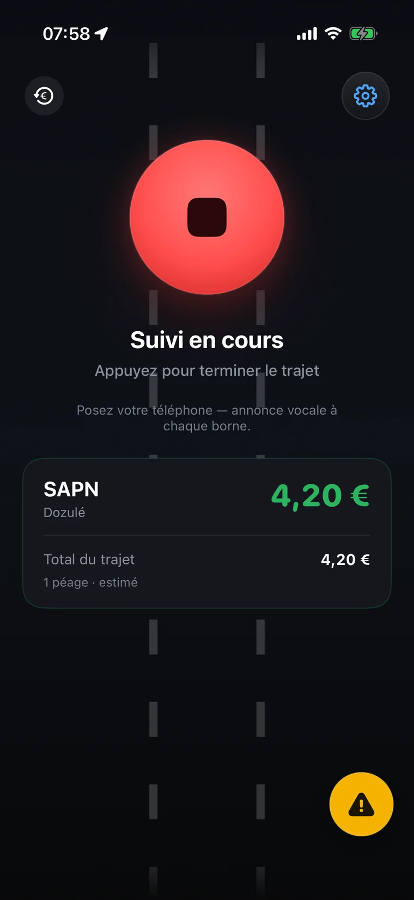
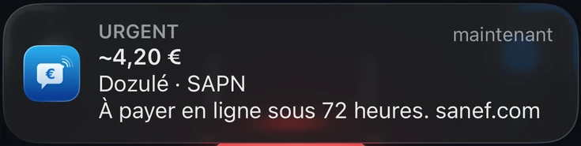
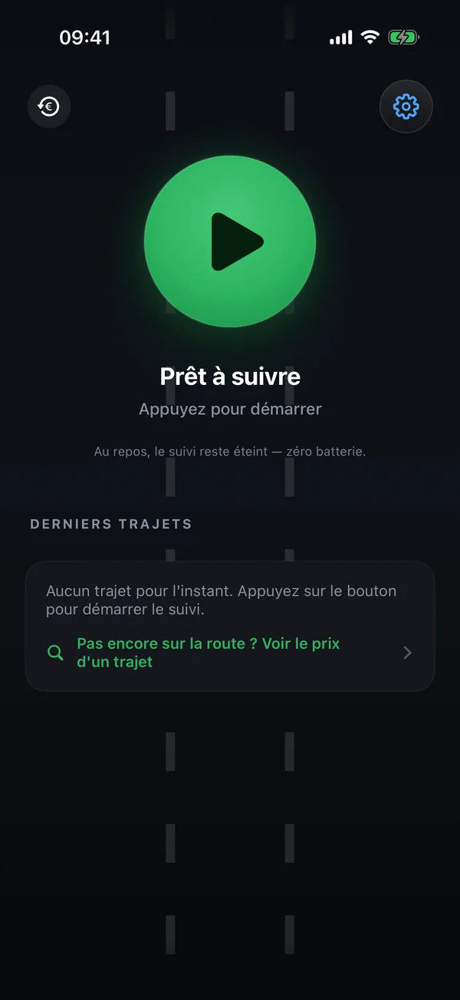
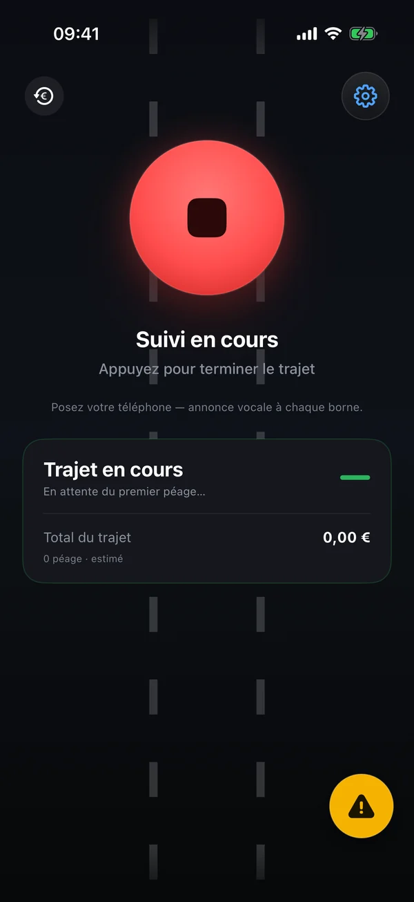
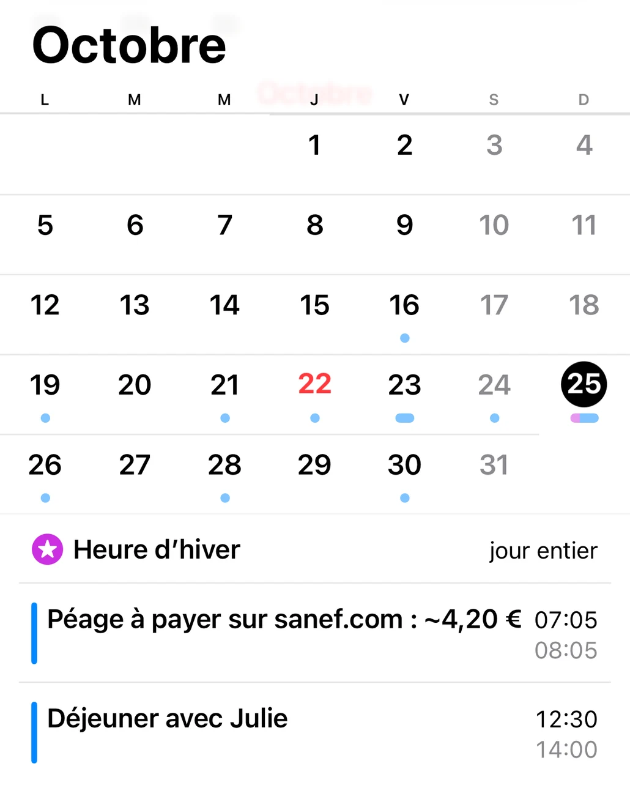
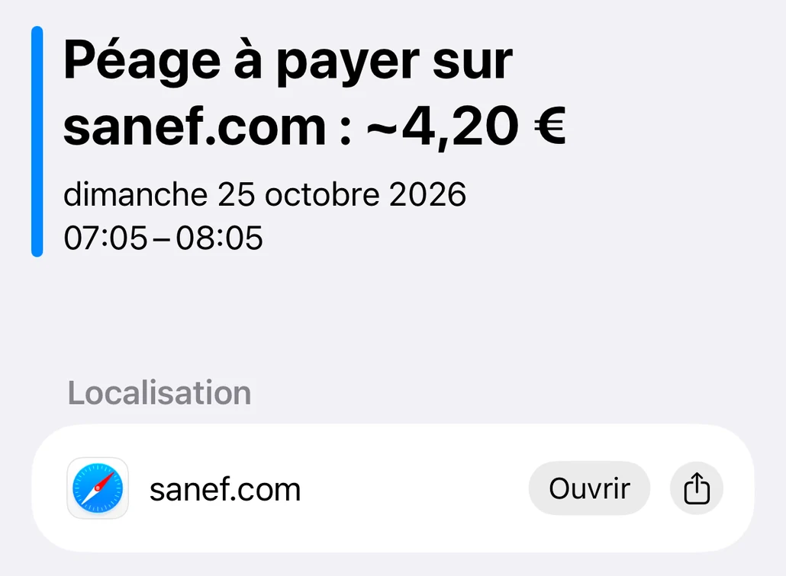
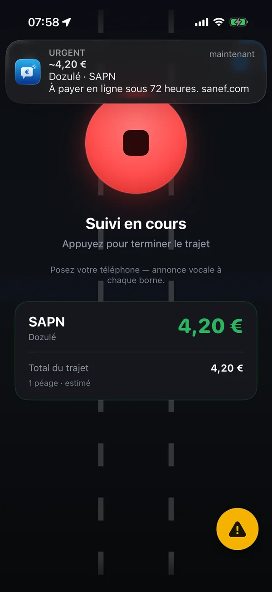

Barrière ou portique en flux libre : votre téléphone vous dit le montant au moment où vous passez. Les yeux restent sur la route.


Vous la lancez, vous roulez, elle vous informe.


Avec CarPlay, le suivi peut même démarrer tout seul.
Sur l'A13, l'A14, l'A79, autour de Milan, à Dartford, sur la M50 de Dublin ou au Portugal, des portiques ont remplacé les barrières : c'est le péage en flux libre. Sans badge, comment savoir si vous avez un péage à payer, combien, et avant quand ? Péage Notif vous le dit au passage.
On passe sous le portique sans s'arrêter. Avec un badge, le péage est prélevé tout seul.
Sans badge, le péage se paie ensuite en ligne : 72 heures en France, un délai qui varie selon le pays.
En France, l'avis de paiement ajoute 10 € si vous le réglez sous 15 jours, 90 € ensuite. Sans réponse en deux mois, l'amende passe à 375 €.
Le montant s'affiche et s'annonce à voix haute, avec le délai pour payer : Péage Dozulé, 4 euros 20. À payer en ligne sous 72 heures.

La fin du trajet annonce le montant et la date limite. Le récapitulatif ouvre le site officiel de l'exploitant en un appui, avec les étapes à suivre.

Un rappel le lendemain, un autre peu avant l'échéance, toujours entre 9 h et 21 h. Un appui sur « C'est payé » et l'app n'en parle plus.

L'app vous propose l'événement déjà rempli, avec une alerte : un appui pour l'enregistrer. Il se range parmi vos rendez-vous, dans l'agenda que vous utilisez déjà (Calendrier d'Apple, Google Agenda…), avec le lien du site de paiement. L'app n'a pas besoin d'accéder à votre agenda.


| Où | Délai | Où payer |
|---|---|---|
| France | ||
| A13 et A14, entre Paris et Caen | 72 heures | sanef.com, ou chez un buraliste du réseau Nirio |
| A4, sortie 36 (Boulay-Moselle) | 72 heures | sanef.com, ou chez un buraliste du réseau Nirio |
| A79, entre Montmarault et Digoin | 72 heures | paiement.aliae.com, ou à une borne le long de l'autoroute |
| Italie | ||
| Pedemontana, au nord de Milan | 15 jours | apl.pedemontana.com |
| Corda Molle, près de Brescia | 15 jours | autoviapadana.it, ou l'app de l'exploitant |
| Royaume-Uni | ||
| Dartford, à l'est de Londres | Avant minuit le lendemain | gov.uk |
| Ponts de la Mersey, à Liverpool | Avant minuit le lendemain | merseyflow.co.uk |
| Tunnels de la Tyne, à Newcastle | Avant minuit le lendemain | tt2.co.uk |
| Tunnels de Blackwall et de Silvertown, à Londres | 3 jours | tfl.gov.uk |
| Irlande | ||
| M50, autour de Dublin | Avant 20 h le lendemain | eflow.ie |
| Pays-Bas | ||
| A24 Blankenburg, à Rotterdam | 72 heures | e-tol.nl |
| Portugal | ||
| Portiques électroniques | Inscription avant le passage | pttolls.com, sinon dès que le passage apparaît sur le portail officiel |
| Espagne | ||
| AP-636, Gipuzkoa | Inscription avant le passage | bidegi.eus |
Passé le délai, l'exploitant ajoute une majoration. En Norvège et en Suède, rien à faire : la facture arrive d'elle-même, l'app vous l'indique dans le récapitulatif. Délais relevés sur les sites officiels des exploitants.
Le péage est prélevé tout seul. Indiquez-le une fois dans les réglages : l'app ne vous parle plus de paiement.
Péage Notif ne vous demandera jamais de payer et n'envoie aucun SMS. Le paiement se fait uniquement sur le site officiel de l'exploitant, celui que l'app vous indique.
Le prix s'affiche en grand, à l'instant précis du franchissement, avec le trajet et le réseau concernés.

Une Live Activity suit le total qui grimpe au fil des péages — sur l'écran verrouillé, en Dynamic Island et sur CarPlay.
Voiture, camping-car, poids lourd ou moto : réglez votre classe une fois, l'app annonce le tarif qui vous correspond. Les tarifs officiels sont dans l'app, elle fonctionne même sans réseau.

Autoroutes, tunnels, ponts et portiques en flux libre dans 18 pays : chaque point de la carte est un péage que Péage Notif reconnaît au passage. Tout est dans l'app, rien ne se télécharge en route.


Péages et vignettes, pays par pays
En entrant en Suisse, en Autriche, en Slovénie, en Tchéquie, en Slovaquie, en Hongrie, en Roumanie, en Bulgarie, en Moldavie ou en Biélorussie, l'app vous rappelle que la vignette est obligatoire et où l'acheter.
Franc suisse, livre sterling, couronnes, dirham, dinar ou dollar canadien : le montant s'affiche dans la devise du pays, avec son équivalent en euros quand la Banque centrale européenne en publie le cours.
L'app parle treize langues et garde la vôtre de part et d'autre des frontières. Les noms des gares restent ceux des panneaux.
La même app, la même base de péages, le même prix au passage. Disponible sur Google Play.
Les péages de 18 pays, l'annonce vocale, le total du trajet et le récap de fin de route. En treize langues.
Dès que votre téléphone se connecte à la voiture en Bluetooth, Péage Notif vous propose de lancer le suivi. Un appui, et c'est parti.
Le prix est annoncé par le son de la voiture, par-dessus la musique ou le GPS. Toujours sans compte, sans publicité et hors ligne.
Chaque retour envoyé depuis la route est rejoué contre les grilles officielles. Dans les dernières versions, notamment :
Au passage d'un péage, l'annonce vocale n'est plus couverte par le son de la notification. Si la voix est coupée, le son revient : jamais un péage en silence.
L'app parle treize langues, et le récapitulatif indique la date des tarifs de chaque pays traversé.
Les barrières abordées au ralenti, les grandes plateformes de péage et les gares voisines sont mieux reconnues, et le bon tarif s'affiche dans les deux sens.
Les mêmes écrans que sur l'App Store — le prix en héros, le reste en légende.


Le modèle de Péage Notif tient en deux mots : sans compte, hors-ligne.
Écrivez-nous à support@peagenotif.fr — ou signalez une erreur directement depuis l'app (Réglages › Signaler un problème).
Sur iPhone, depuis l'App Store, et sur Android, depuis Google Play. C'est la même application sur les deux : le prix de chaque péage annoncé à voix haute au passage, le délai, le rappel et l'agenda pour le flux libre, et le récapitulatif de fin de trajet.
Oui, entièrement gratuite et sans abonnement. Aucun compte n'est requis.
Ce sont des estimations calculées à partir des grilles tarifaires officielles (classe 1 par défaut, modifiable dans les réglages). Elles ne sont pas contractuelles : seul le montant facturé par votre opérateur de télépéage ou la société d'autoroute fait foi.
Au passage, Péage Notif l'annonce à voix haute et l'affiche, pour la classe de votre véhicule. Avant de partir, le bouton « Prix d'un trajet » de l'app donne le tarif entre deux gares, et le site publie les tarifs de chaque gare.
Non. Péage Notif est indépendant de tout opérateur et n'encaisse aucun péage. Il vous informe du prix estimé au passage. Sur les autoroutes en flux libre (A13, A14, A79…), sans badge, le péage se paie ensuite en ligne : l'app vous rappelle le montant et la date limite.
Le GPS ne tourne que pendant un suivi que vous avez démarré. Au repos, l'app ne consomme rien, et à l'arrêt elle ralentit le GPS. Si vous oubliez d'arrêter le suivi en arrivant, elle vous demande si le trajet est terminé.
Pendant le trajet, touchez le bouton de signalement et dites ce qui ne va pas. Après coup, passez par Réglages › Signaler un problème, ou écrivez à support@peagenotif.fr. Ces retours servent directement à corriger la base de péages.
Dans 18 pays : la France et l'Italie sur toutes leurs autoroutes à péage, treize autres pays d'Europe, le Maroc, la Tunisie et le Canada (Ontario et Québec). La carte du périmètre montre chaque péage reconnu.
Sans barrière, rien ne vous arrête au passage. Péage Notif annonce chaque portique franchi avec son montant et la date limite, puis le reprend dans le récapitulatif de fin de trajet, avec la marche à suivre pour payer. Avec un badge de télépéage, rien à faire : le passage est prélevé tout seul.
Avec un badge de télépéage, rien à faire : le passage est prélevé tout seul. Sans badge, il se paie en ligne sur le site officiel de l'exploitant, avec votre plaque d'immatriculation : sanef.com pour l'A13, l'A14 et la sortie 36 de l'A4, paiement.aliae.com pour l'A79, dans les 72 heures. Péage Notif annonce le montant au passage du portique, vous rappelle la date limite et ouvre le bon site en un appui. Le prix de chaque portique est dans le guide du paiement en flux libre.
En France, passé 72 heures, un avis de paiement arrive par courrier : le péage plus 10 € si vous le réglez sous 15 jours, plus 90 € ensuite. Sans paiement ni contestation en deux mois, l'amende forfaitaire majorée est de 375 €. Tout est détaillé dans le guide de l'amende et des faux SMS.
Non. Péage Notif ne vous demandera jamais de payer et n'envoie ni SMS ni e-mail. Des SMS frauduleux de ce type circulent : ne touchez pas à leur lien. Un péage en flux libre se paie uniquement sur le site officiel de l'exploitant, par exemple sanef.com pour l'A13 et l'A14.
Péage Notif est gratuit, sans compte — installé en dix secondes.